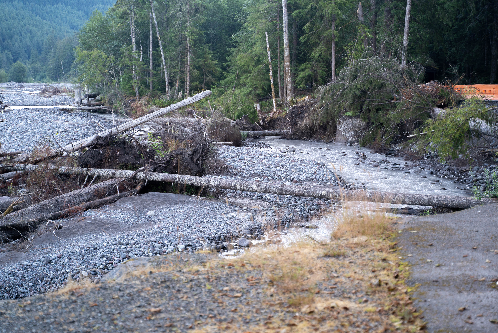

Changing path of a river
Over time, the path of Carbon River has changed. River push rocks, soil, and trees into new places. The river can carve out new paths or build up new barriers.
It's tough to see, but near the upper left you might be able to see a human-made structure called an engineered log jam. It helped prevent erosion near it, but not further down the river where this picture was taken. There is another picture with a closer view of the engineered log jam to explain it more.
Location: Carbon River Entrance
Visited: August 15, 2022 at 1:34 PM